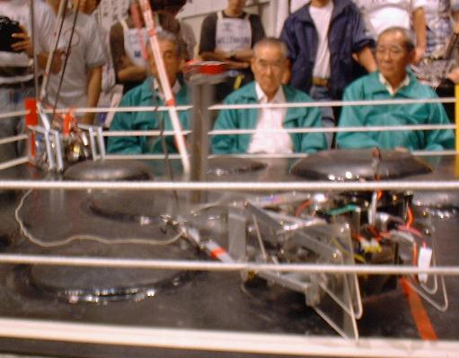

正確にはかわさきロボット競技会バトルロボットトーナメントという大会名です。
私たちは第４回大会から出場しています。
今年（２０００年）は第７回大会が開催されました。
かわさきロボコンとは毎年神奈川県川崎市産業振興財団が主催している。ロボットの大会です。
１．８ｍ四方の障害物の存在するリングの上で脚移動機構と
腕攻撃機構を備えたラジコン型ロボットによる異種格闘技戦です。
詳しくは第７回かわさきバトルロボットトーナメントホームページをご覧下さい。
やはり脚機構は難しいです。各々のチームが試行錯誤している様子がよく分かります。
今年は去年の「カトレア」チームが使用しているチェビシェフ機構を使用したマシンが多かったです。
でも、独自の機構を考え出し上位入賞を果たしたチームもあったりするので
まだチェビシェフ機構を使えば安心というわけでもなさそうです。